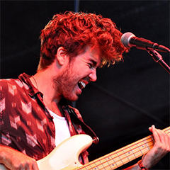
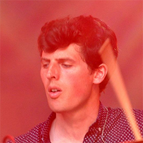
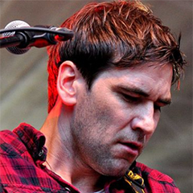

Danny O'Reilly is the front-man of the band. He was born in Dublin, Ireland on March 23rd 1995. He joined the Coronas at the start in 2003 when they were founded. He was born to record producer Joe O'Reilly and singer Mary Black.

Graham Knox is one of the bands guitarists, was also born in Dublin, Ireland. He joined the band at the start in 2003 as well.

Conor Egan is the bands Drummer, just like the other members of the band, he was also born in Dublin, Ireland and joined the band when they first formed in 2003.

Dave McPhilips joined the band at a later date as a guitarist, joining around 2007 but apparently he fit into the band perfectly. Sadly he announced his departure from the band in late 2019 after almost 12 years saying that it was time for change.